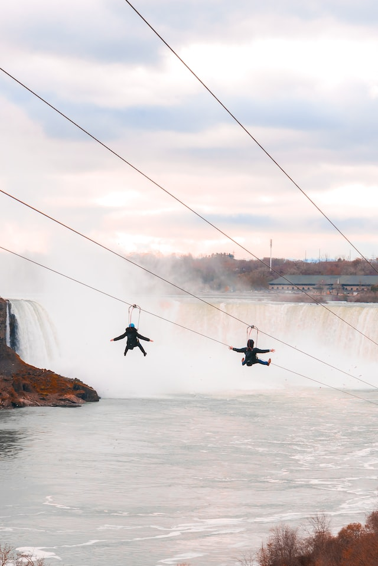
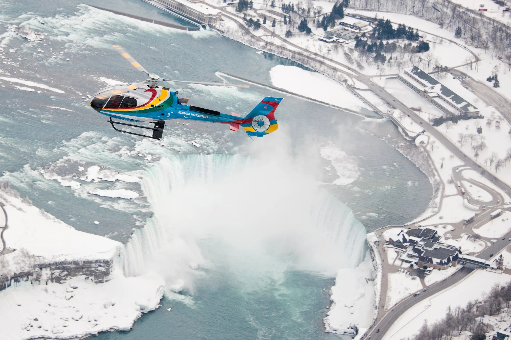
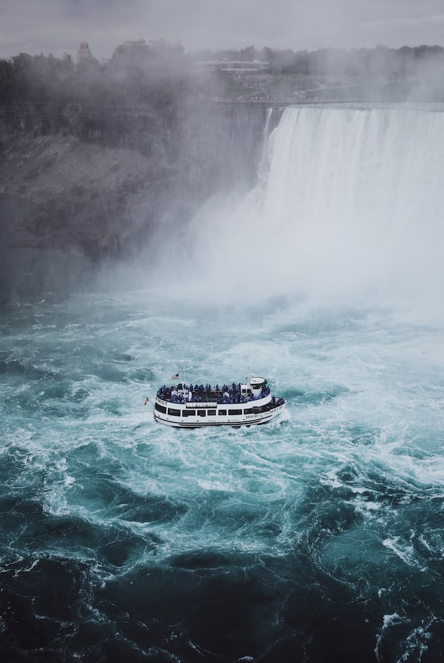
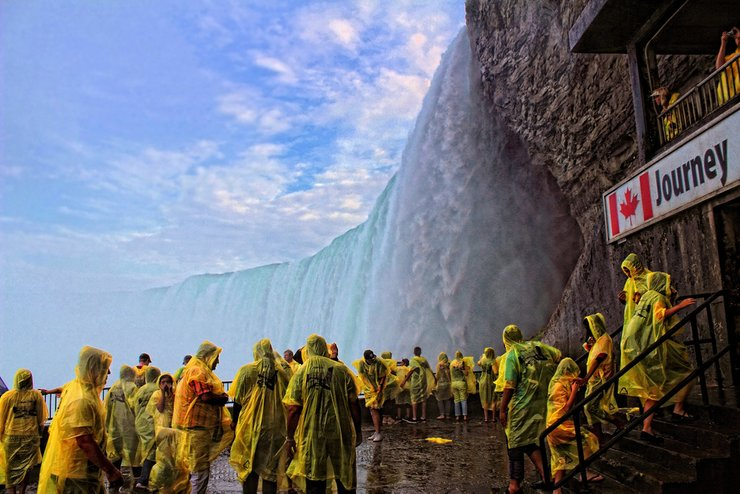

<!-- Página web sobre las Cataratas del Niágara (Canadá - EEUU) -->

<!DOCTYPE html>
<!-- Lenguaje de la página -->
<html lang="es"></html>
<html>
<head>
    <!-- Codificación de la página -->
    <meta charset="UTF-8">
  <!-- Título de la página -->
	<title>Las grandiosas Cataratas del Niágara</title>
  <!-- Estilos de la página (Referencia al archivo css de estilos para la página) -->
	<link rel="stylesheet" type="text/css" href="estilos.css"> <!-- Referencia al archivo css de estilos para la página -->
    <!-- Importar iconos de Font Awesome -->
    <link rel="stylesheet" href="https://use.fontawesome.com/releases/v5.8.1/css/all.css" integrity="sha384-50oBUHEmvpQ+1lW4y57PTFmhCaXp0ML5d60M1M7uH2+nqUivzIebhndOJK28anvf" crossorigin="anonymous"> <!-- Referencia a los iconos de Font Awesome (Se usa más que todo para no crear iconos muy complejos con spans)-->
</head>
<!-- Cuerpo de la página -->
<body>
    <!-- Vinculo para volver al tope de la página -->
  <div id="top"></div>

  <input type="checkbox" id="menu-desplegable" class="menu-desplegable-check"> <!-- Crear checkbox para menú desplegable -->

  <!-- Crear icono del menú desplegable para pantallas pequeñas -->
  <a id="menu-icon">
    <span></span>
    <span></span>
    <span></span>
  </a>

  <!-- Crear menú desplegable para pantallas pequeñas -->
  <nav id="menu-desplegable">
    <ul>
      <li><a href="Ubicacion.html">Ubicación</a><br></li>
      <li><a href="Personajes que lo habitan.html">Personajes que lo habitan</a><br></li>
      <li><a href="Actividades.html">Actividades</a><br></li>
      <li><a href="Historia.html">Historia</a><br></li>
      <li><a href="Referencias.html">Referencias</a><br></li>
      <li><a href="Index.html">Pág. Principal</a><br></li><!-- Crear flecha para volver al tope de la página -->
      <a href="#top" class="top"><i class="fas fa-arrow-up"></i></a>
    </ul>
  </nav>

  <!-- Top de la página (Título contenido en un frame) -->
  <div class="Titulo">
    <header class="Titulo1">
        <h1>Las grandiosas <br>Cataratas del Niágara</h1>
        <h2>Un lugar donde se puede <br>apreciar la majestuosidad de la naturaleza</h>
    </header>
  </div>

  <section>
    <div class="Botones">
      <!-- Botones de navegación -->
      <!-- Cada botón redirecciona a una página diferente -->
      <button class="button" onclick="window.location.href='Ubicacion.html'">Ubicación</button>
      <button class="button" onclick="window.location.href='Personajes que lo habitan.html'">Personajes que lo habitan</button>
      <button class="button" onclick="window.location.href='Actividades.html'">Actividades</button>
      <button class="button" onclick="window.location.href='Historia.html'">Historia</button>
      <button class="button" onclick="window.location.href='Referencias.html'">Referencias</button>
      <button class="button" onclick="window.location.href='Index.html'">Pág. Principal</button>
    </div>
  </section>

  <h1>¡Únete a la emoción en las Cataratas del Niágara! Disfruta de aventuras en bote, vistas impresionantes y más. ¡Ven y vive la experiencia!</h1>
  <h2 class="NOTA">NOTA: Puedes darle click a las imagenes para reservar una cita para la correspondiente actividad.</h2>
  </section>
    <!-- Contenido de la página -->
    <table class="Tabla_actividades">
        <div class="Contenido_actividades">
            <tr>
                <!-- Imagenen 1 para la primer fila y primer columna -->
                <td>
                    <figure class="Tirolesa"><a href="https://www.wildplay.com/niagara-falls">
                        </a>
                        <figcaption><span style="color: rgb(0, 110, 255)"><b>Bajada por tirolesa en las Cataratas del Niágara</b></span></figcaption>
                    </figure>
                </td>
                <!-- Texto referente a la primer imagen-->
                <td>
                    <p class="DTirolesa"><span style="color: rgb(0, 110, 255)">•<b>Bajada por tirolesa:</b></span><br><br>Una de las actividades de las que se puede participar en las Cataratas del Niágara es la bajada por tirolesa que se encuentra en la parte de las Cataratas del territorio canadiense. Esta actividad consiste en que el participante se coloca en una especie de silla que se encuentra atada a una cuerda y se desliza por por una tirolesa se encuentra en la parte superior de las Cataratas. Esta actividad es muy divertida y emocionante, ya que se puede apreciar la majestuosidad de las Cataratas desde una perspectiva diferente. Además, se puede apreciar la belleza de la naturaleza que rodea a las Cataratas, ya que se puede ver el río Niágara, el cual es el que alimenta a las Cataratas, y también se puede ver el bosque que rodea a las Cataratas. Esta actividad es muy recomendada para todas las personas que visiten las Cataratas del Niágara, ya que es una experiencia única que no se puede vivir en ningún otro lugar del mundo.</p>
                </td>
            <tr>
                <td>
                    <!-- Texto referente a la segunda imagen-->
                    <p class="DHelicoptero"><span style="color: rgb(0, 110, 255)"><b>•Viaje por Helicoptero:</b></span><br><br>El viaje en helicóptero por las Cataratas del Niágara es una experiencia emocionante que ofrece una vista panorámica única y espectacular de una de las maravillas naturales más impresionantes del mundo. El recorrido comienza en una plataforma de despegue cercana a las cataratas, donde los pasajeros abordan el helicóptero. Una vez a bordo, el helicóptero se eleva en el aire y se dirige hacia las cataratas. El viaje dura alrededor de 12 minutos y durante este tiempo se puede disfrutar de una vista impresionante de las cataratas y de los alrededores.<br>El helicóptero vuela a baja altura sobre las cataratas, lo que permite a los pasajeros disfrutar de una vista panorámica inolvidable del agua que cae en cascada desde una altura de más de 50 metros. Los pasajeros también pueden ver las islas cercanas y el impresionante paisaje natural que rodea las cataratas.</p>
                </td>
                <td>
                    <!-- Imagenen 2 para la segunda fila y segunda columna -->
                    <figure class="Helicoptero"><a href="https://www.niagarafallstourism.com/tickets/sunset-flights-14890/">
                        </a>
                        <figcaption><span style="color: rgb(0, 110, 255)"><b>Viaje por Helicoptero en las Cataratas del Niágara</b></span></figcaption>
                    </figure>
                </td>
            </tr>
            <tr>
                <!-- Imagenen 3 para la tercer fila y primer columna -->
                <td>
                    <figure class="Bote"><a href="https://www.niagarafallstourism.com/tickets/deluxe-niagara-falls-day-tour-with-boat-cruise-16073/">
                        </a>
                        <figcaption><span style="color: rgb(0, 110, 255)"><b>Paseo en bote por el Río Niágara</b></span></figcaption>
                    </figure>
                </td>
                <!-- Texto referente a la tercer imagen-->
                <td>
                    <p class="DBote"><span style="color: rgb(0, 110, 255)"><b>•Paseo por bote:</b></span><br><br>El paseo en bote en las Cataratas del Niágara es una experiencia emocionante y memorable. Los visitantes se ponen impermeables y se suben a un bote que los lleva cerca de las cataratas. A medida que se acercan, sienten la fuerza del agua y el ruido ensordecedor de las cataratas. La niebla y el rocío salpican a los pasajeros mientras admiran las espectaculares vistas. El paseo dura unos 20 minutos y es una de las formas más emocionantes de experimentar las Cataratas del Niágara.</p>
                </td>
            <tr>
                <td>
                    <!-- Texto referente a la cuarta imagen-->
                    <p class="DTrasCataratas"><span style="color: rgb(0, 110, 255)"><b>•Tour por detrás de las cataratas:</b></span><br><br>El tour por detrás de las Cataratas del Niágara es una experiencia única que permite a los visitantes explorar la base de las cataratas desde un ángulo diferente. Los visitantes caminan por un sendero que los lleva detrás de las cataratas y les permite ver el agua cayendo desde una perspectiva única. A medida que avanzan, pueden sentir la fuerza del agua y escuchar el ensordecedor ruido de las cataratas. También pueden ver la estructura de las cataratas y los túneles que se han construido para permitir la observación desde diferentes ángulos. Además, hay un mirador subterráneo que ofrece una vista panorámica de la caída del agua. Este tour es una experiencia emocionante e informativa que permite a los visitantes apreciar la majestuosidad de las Cataratas del Niágara desde una perspectiva diferente.
                    </p>
                </td>
                <td>
                    <!-- Imagenen 4 para la cuarta fila y segunda columna -->
                    <figure class="TrasCataratas"><a href="https://www.niagarafallstourism.com/tickets/journey-behind-the-falls-14736/">
                        </a>
                        <figcaption><span style="color: rgb(0, 110, 255)"><b>Entrada a la parte de atrás de las cataratas</b></span></figcaption>
                </td>
            </tr>
        </div>
    </table>
	</section>

    <!-- Crear flecha para volver al tope de la página -->
    <a href="#top" class="top"><i class="fas fa-arrow-up"></i></a>
    
	<footer class="Footer">
		<p>Creado por: Jeferson Yesid Gonzalez Ortiz | Cod: 319019 | jegonzalezor@unal.edu.co | Curso: Gráfica Interactiva | Universidad Nacional de Colombia sede Palmira | Derechos reservados &copy; 2023</p>
	</footer>
</body>
</html>
